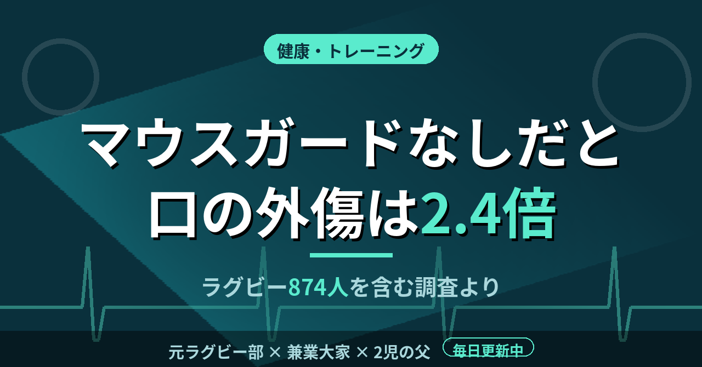
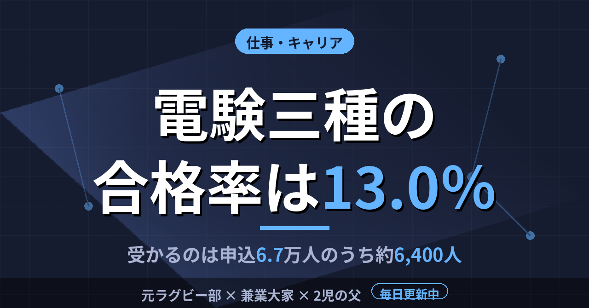
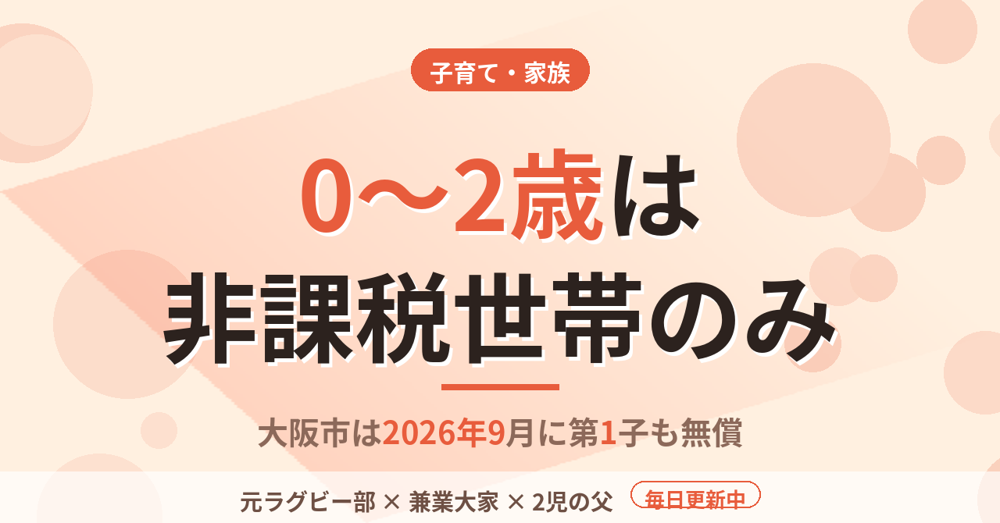
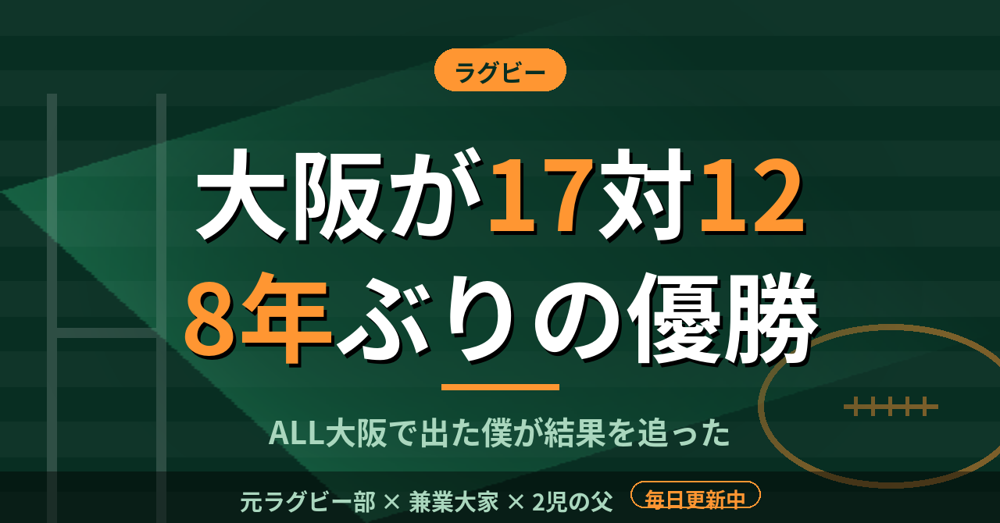
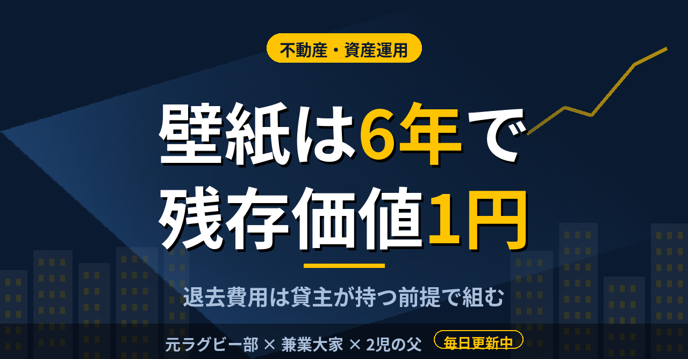

hohemaro15
ラグビー20年、不動産1棟。調べてから書く記録
このサイトについて
小学5年でラグビーを始めて、大学まで20年続けた。大阪の激戦区で6年、同志社大で4年。ポジションはユーティリティバックス。
今はメーカーで設備の電気を担当しながら、兵庫県尼崎市に木造9戸の一棟アパートを運用している。2児の父。
経験談だけで終わらせないために、書く前に必ず制度と統計を調べることにしている。数字が確認できなかった話は書かない。
書いていること
ラグビー
小5から大学まで20年。大阪の激戦区で見たこと、カテゴリが上がるたびに起きたこと。
不動産・資産運用
2016年に検討を始めて2026年に1棟目。判断基準と、断り続けた10年の話。
健康・トレーニング
増量の失敗と成功、サプリで肝臓の数値を悪くした経験、続けている設計。
子育て・家族
2歳と0歳を育てながらの時間の使い方と、資産形成の時間軸。
最近の記事
-

健康・トレーニングマウスガードなしだと口の外傷は2.4倍。ラグビーで歯を折った僕が研究を読んだ
ラグビーで歯が折れたことがある。いまの前歯はセラミックで、インプラントも入っている。その経験があるので、マウスガードの研究を読んでみた。…
-

仕事・キャリア電験三種の令和7年度合格率は13.0％。申込6.7万人の試験を設備の電気担当が読んだ
電気系の学科を出て、化学メーカーで設備の電気を担当している。この仕事をしていると、電験三種という言葉は日常的に耳に入る。転職活動で電気系設備の経験が重宝される手応えを得たこともあり、この資格の数字を一度きちんと確かめてみ…
-

子育て・家族0〜2歳は国の無償化では非課税世帯のみ。大阪市は2026年9月から第1子も無料に
2歳と0歳の子がいると、保育料という言葉が家計の話に出てくる。無償化という言葉は知っていたが、自分の子が対象なのかを数字で確かめたことはなかった。今回は制度を読んだ。0歳と2歳の二人を育てていると、この数字は他人事ではな…
-

ラグビー国スポ少年男子は大阪が17対12で優勝。8年ぶりの結果を元ALL大阪が追った
10月の青森で、第80回国民スポーツ大会のラグビーが終わった。少年男子は大阪府が優勝している。結果を見ながら、高3の年にALL大阪のジャージを着た日のことを思い出した。…
-

不動産・資産運用壁紙は6年で残存価値1円。国の原状回復ガイドラインを、1棟目を持つ大家が読んだ
満室が続いているいまも、退去の連絡が来たら最初に気になるのは費用の数字だと思う。1棟目を持つ前の僕は、壁紙の張り替えは出ていく入居者が払うものだと、どこかで思い込んでいた。国のガイドラインを読んで、その前提が違うと分かっ…
-
 ゴルフ
ゴルフ
ハンディは直近20回の上位8回の平均。月1回なら入れ替えに1年8か月
月1〜3回ラウンドしていると、自分の腕前を数字でどう言えばいいのか、時々わからなくなる。練習は週2〜3回の時期もあったが、スコアは良い日も悪い日もある。その揺れを、公式のハンディキャップはどう扱っているのか。日本ゴルフ協…